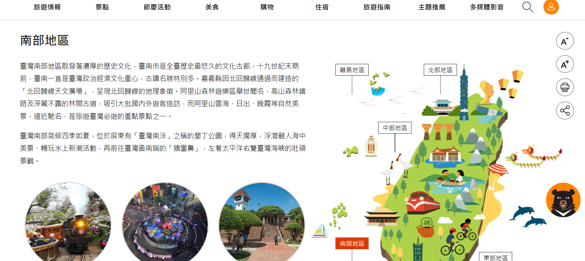

南部地區特色景點
臺灣南部地區散發著濃厚的歷史文化，臺南市是全臺歷史最悠久的文化古都，十九世紀末期前，臺南一直是臺灣政治經濟文化重心，古蹟名勝特別多。嘉義縣因北回歸線通過而建造的「北回歸線天文廣場」，呈現北回歸線的地理象徵。阿里山森林遊樂區舉世聞名，高山森林鐵路及深藏不露的林間古道，吸引大批國內外遊客造訪，而阿里山雲海、日出、晚霞等自然美景，遠近馳名，是旅遊臺灣必遊的重點景點之一。 臺灣南部氣候四季如夏，位於屏東有「臺灣南洋」之稱的墾丁公園，得天獨厚，浮潛融入海中美景、暢玩水上新潮活動，再前往臺灣最南端的「鵝鑾鼻」，左看太平洋右覽臺灣海峽的壯碩景觀。
特色景點
| 阿里山 | 阿里山位於台灣嘉義縣，是一座以櫻花和日出著稱的山岳景區。阿里山不僅有壯麗的自然風光，還有著濃厚的文化歷史底蘊。每年春季，櫻花盛開的季節吸引著大量遊客前來賞花，而在阿里山頂上的神木群、奮起湖等景點，遊客可欣賞到令人嘆為觀止的美景。 |
| 旗津風景區 | 旗津風景區位於高雄市旗津區旗津半島、高雄港西側，因為位在旗山的後面因此稱為旗後(旗后)，是昔日船隻往來津渡的地方因此才改稱為旗津；旗津的地形為一個海外沙洲，南北長約11.3公里、平均寬度200公尺，是高雄市最早的海港，旗津原本與台灣本島相連，1967年高雄港為了開闢第二港口便將外海中的半島地形截斷，讓旗津成為一個獨立小島，至1984年過港隧道落成，使高雄和旗津兩地交通改善，讓旗津成為旅遊資源更為豐富的地方，以海鮮、渡輪和歷史人文古蹟史蹟吸引民眾的旅遊勝地，更規劃旗津風景區讓民眾有更完善的旅遊景點。 |
| 墾丁國家公園 | 墾丁國家公園位於台灣屏東縣，是一個以美麗的沙灘、奇特的岩石和豐富的海洋生態聞名的自然保護區。這片國家公園擁有多樣的生態系統，包括陸地、海域和珊瑚礁等生態環境。 遊客在墾丁可以欣賞到金色的沙灘，如白沙灣和墾丁大街，這些沙灘是陽光、沙灘活動和海灘派對的理想場所。國家公園內的龍磐公園、墾丁大街、墾丁水族館等景點也提供了多元的遊樂和觀光活動。 除了陸地景觀，墾丁的海域也豐富多彩，吸引著潛水者和浮潛愛好者。並且，墾丁的萬里長城、砂島、鵝鑾鼻等地形奇觀都是遊客必訪的景點，讓人感受到大自然的神奇與壯麗。總體而言，墾丁國家公園是一個結合陸地與海域之美的自然寶庫，提供多樣性的戶外活動和美不勝收的自然風光。 |
推薦網站
交通部觀光署-觀光資訊網
LINE旅遊-精選北台灣22處必去旅遊口袋名單懶人包